Секонд-хенд
Я показывал образ из секонд-хенда за 67 BYN и отдельно перечислял вещи другого образа: Zara, Levi’s 527 bootcut и Marko.
TikTok · Telegram
Я веду TikTok @veitov.v и Telegram-канал «Ваня хватит избегать гостей».

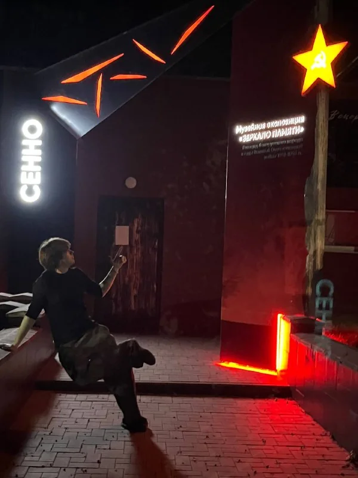
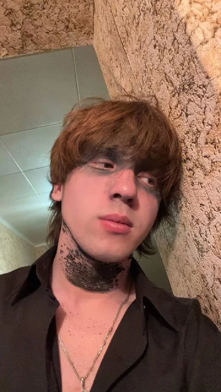
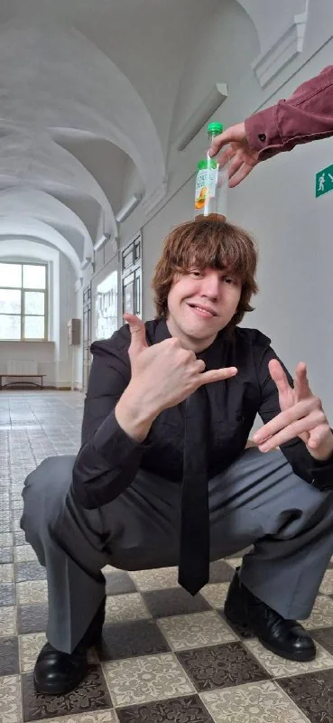
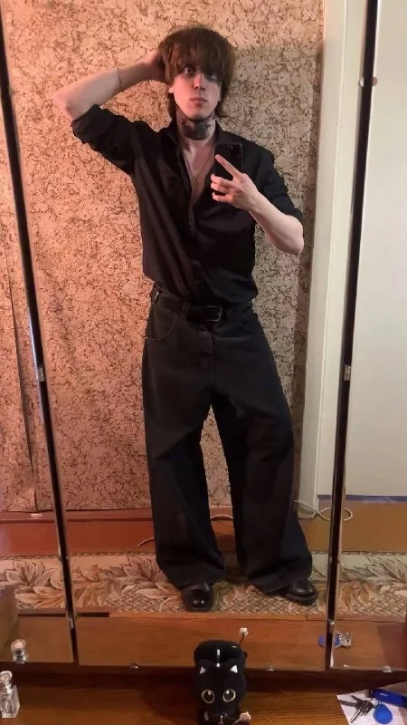

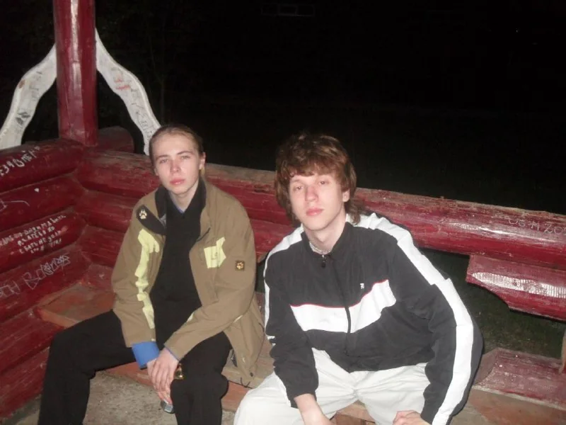
Я веду TikTok @veitov.v и Telegram-канал «Ваня хватит избегать гостей».
В Telegram я публикую фотографии с друзьями, образы из секонд-хендов, домашних животных и архивные кадры. Там есть мои фотографии 2012 года и архив 2017 года.
Белую кошечку зовут Хлоя, трёхцветную — Соня, чёрного кота — Кумар, а собаку — Шанти. Я отдельно знакомил с ними подписчиков.
Я рекомендовал фильм «Убить Зои», делился любимыми треками Dean Blunt и показывал найденную в секонд-хенде футболку с «Криминальным чтивом».
Я отмечал в канале, когда аудитория TikTok достигла 30 тысяч, а позднее — 50 тысяч подписчиков.
Один из моих образов из секонд-хенда: куртка Zara типа M65, джинсы Levi’s 527 bootcut, хенли Zara и ботинки Marko.
Куртка типа M65, джинсы bootcut и вещи из секонд-хенда.Факты из моих открытых публикаций.
Я показывал образ из секонд-хенда за 67 BYN и отдельно перечислял вещи другого образа: Zara, Levi’s 527 bootcut и Marko.
Фильму «Убить Зои» я поставил 8/10. Позднее показал найденную в секонд-хенде футболку с «Криминальным чтивом».
Dean Blunt — один из моих любимых исполнителей. В канале я поделился несколькими любимыми треками.
В Telegram я отмечал достижение 30 и 50 тысяч подписчиков в TikTok и благодарил аудиторию.
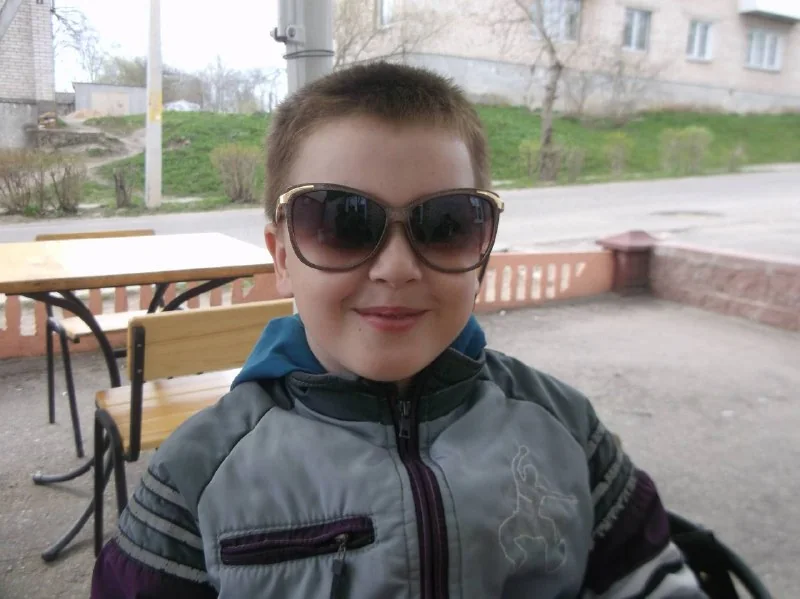
Я возвращаюсь к старым фотографиям. В канале есть мои снимки с подписями «2012 год» и «Архив 2017 года».
Я рекомендовал «Убить Зои», публиковал находку с «Криминальным чтивом» и делился любимыми треками Dean Blunt.
В двух публикациях я благодарил Никиту за подарки. Сначала он сдержал обещание подарить ковёр, а позднее я написал, что считаю его уже не подписчиком, а другом.
Я не веду «огоньки», не ищу интернет-знакомства и не являюсь психологом. Если нужна моральная помощь, лучше обратиться к близким, психологу или психотерапевту.
«Если ты не уделяешь достаточно времени тому, чтобы понять самого себя, то в итоге ты начнешь впитывать чужие представления о том, кем ты являешься».
Из моего Telegram-канала
Фотографии из моего Telegram
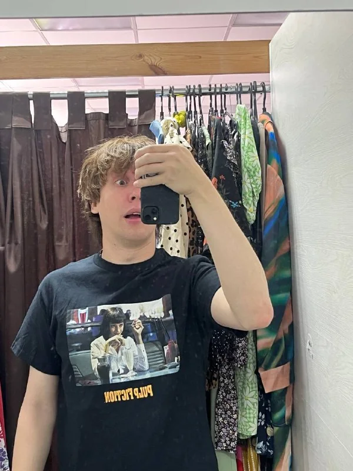
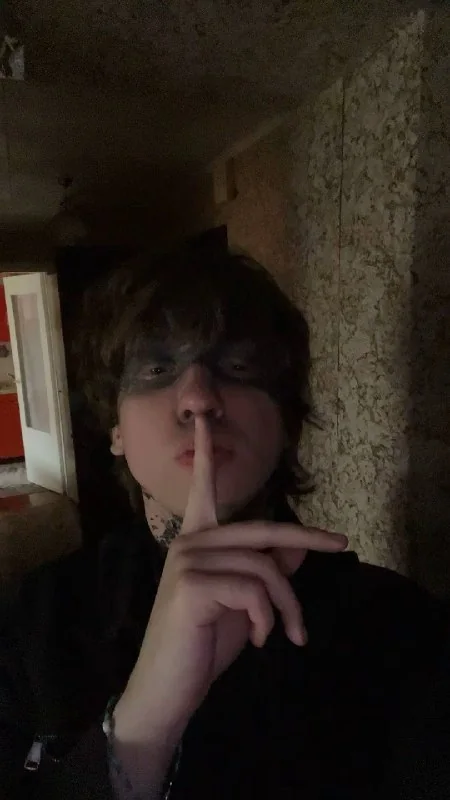
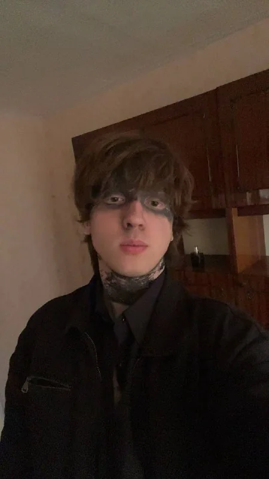
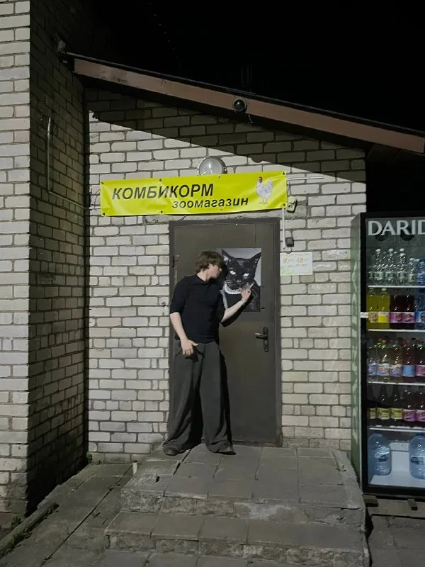
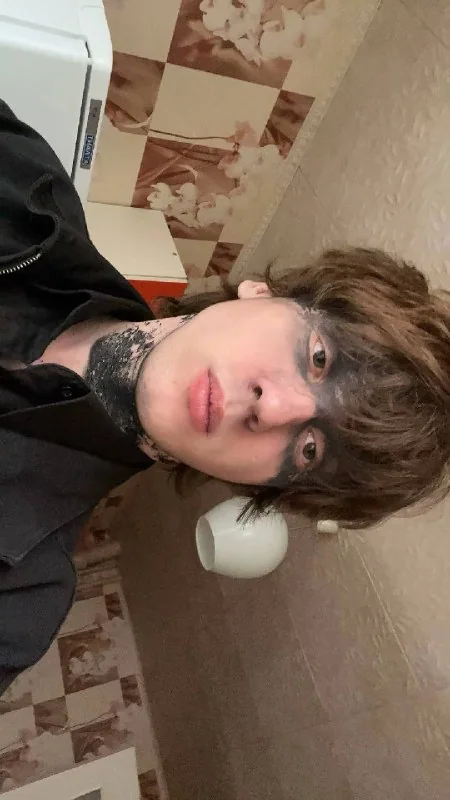
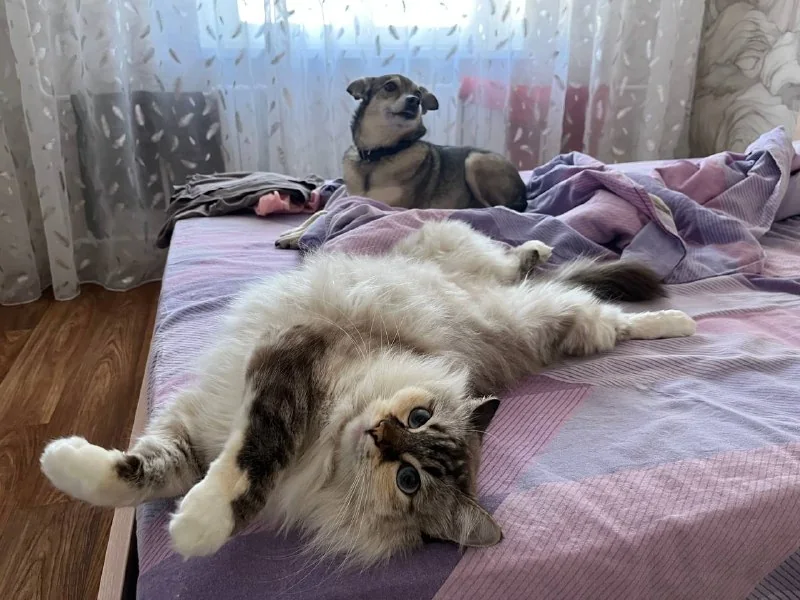
«Краткое напоминание о том, что очень важно говорить о своих чувствах, я не буду конечно этого делать, но вам, ребята, определенно стоит».
«Мои Дараженькія, вот нас и стукнуло ровно 50 тысяч, и это очень круто!!! Даже не вериться в это, Всем спасибо!! Люблю Вас!»